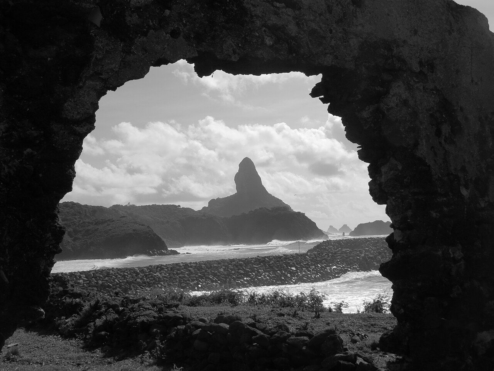
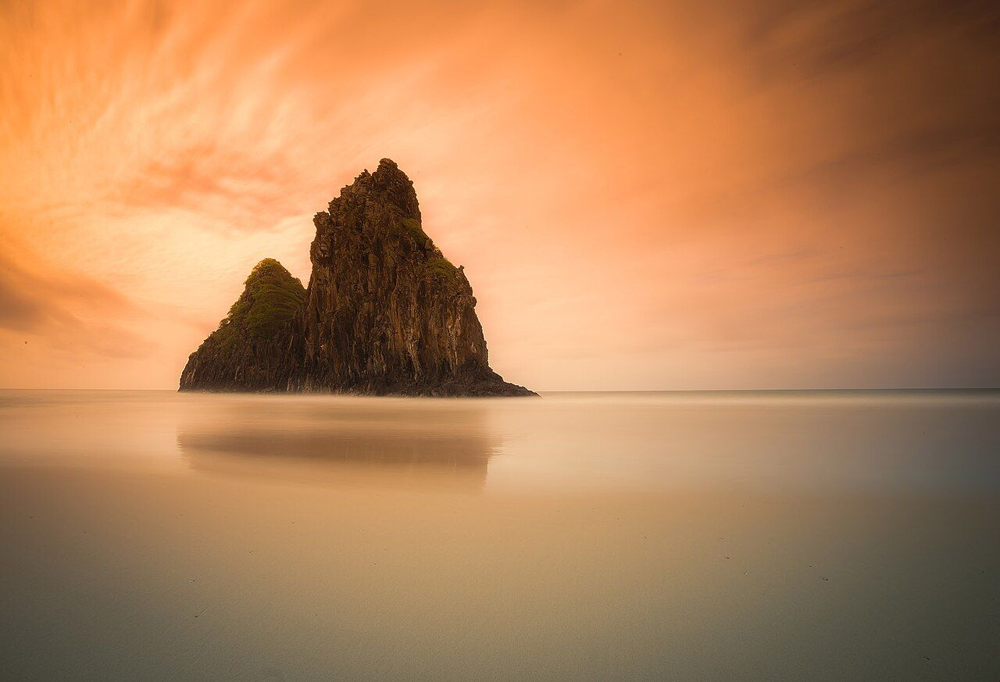
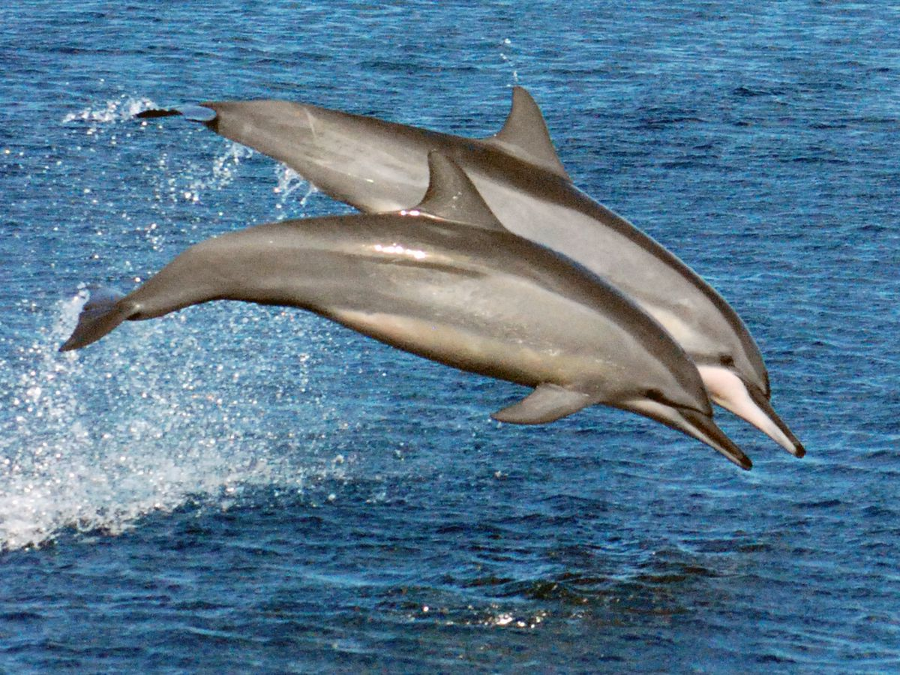
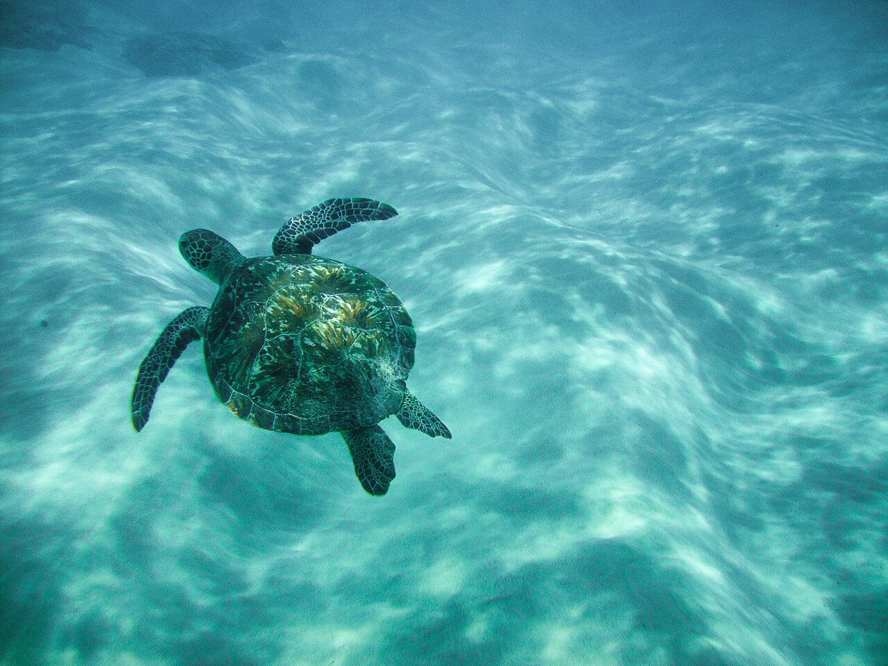
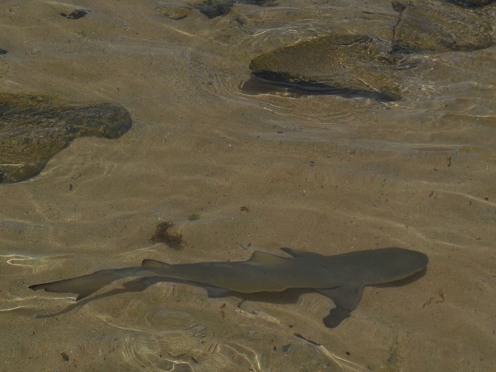
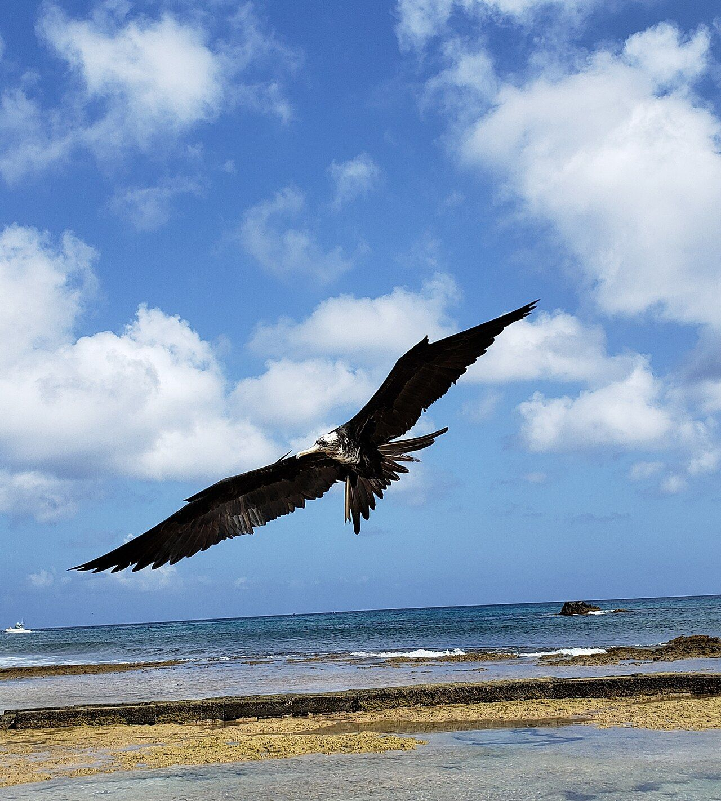
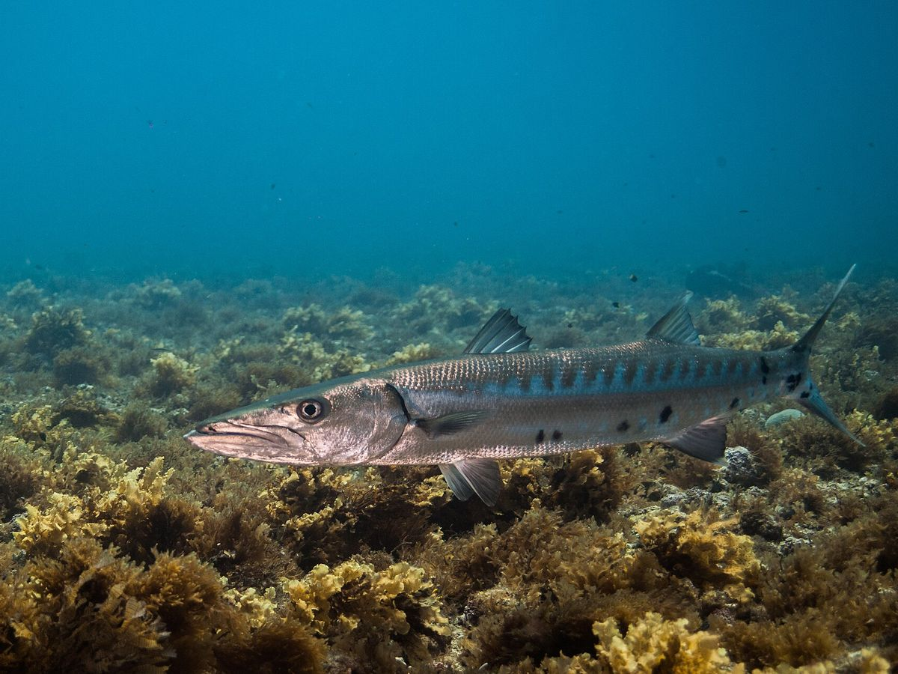
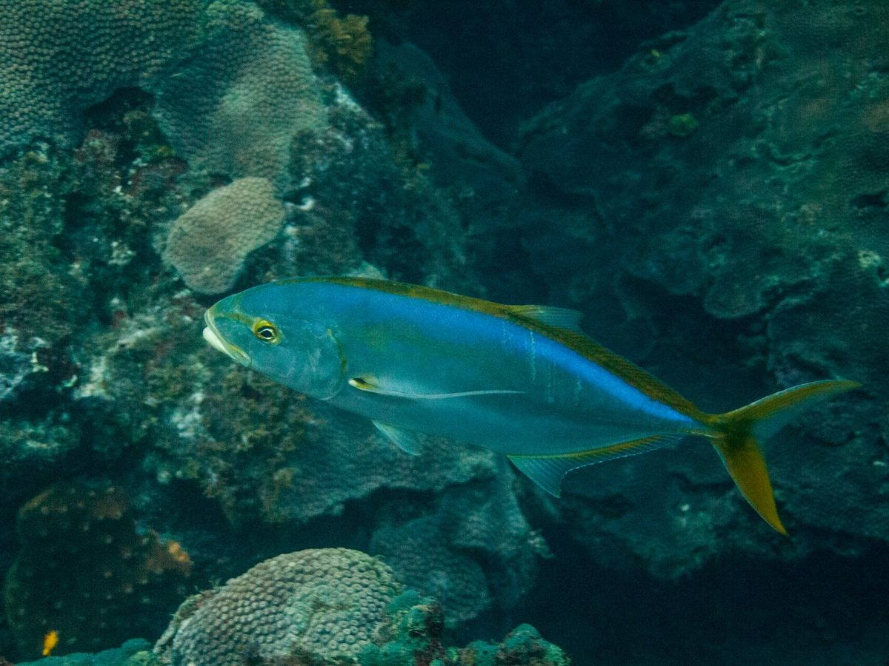

Fernando de Noronha
O último mapa do jogo é um arquipélago de verdade, no meio do Atlântico. Aqui está Noronha como ela é: o vulcão, o mar de piscina, os golfinhos que giram no ar e o que nada em volta.
O lugar
Fernando de Noronha fica a uns 350 quilômetros da costa do Rio Grande do Norte. São 21 ilhas, ilhotas e rochedos de origem vulcânica, com uns 26 quilômetros quadrados no total, e só a maior tem gente. O mar em volta é o Parque Nacional Marinho, criado em 1988 e Patrimônio Mundial da UNESCO desde 2001, junto com o Atol das Rocas.
O relevo veio de erupções submarinas, e o vento e as ondas fizeram o resto: falésias, enseadas e o Morro do Pico, que domina a paisagem. Nos rochedos nascem milhares de aves marinhas, nas praias as tartarugas põem os ovos, e na Baía dos Golfinhos centenas de golfinhos-rotadores aparecem quase todo dia.
A história humana começou em disputa. A ilha foi doada como capitania hereditária a Fernão de Loronha em 1504, e ingleses, franceses e holandeses a invadiram nos séculos seguintes. A partir de 1833 ela passou a receber condenados, e foi presídio, depois também político, até 1957. De 1942 a 1988 foi território federal. Hoje vivem ali pouco mais de três mil pessoas: 3.167 no censo de 2022.





O que você vê no jogo
No horizonte do mapa estão o Morro do Pico, os Dois Irmãos e uma ilhota, e de vez em quando um golfinho salta da água. Tudo isso existe de verdade, e a lista abaixo conta como.
A paisagem
Morro do Pico
É o ponto mais alto do arquipélago, com pouco mais de trezentos metros, e o topo de uma montanha submarina que sobe de uns quatro mil metros de profundidade. O vulcão de Fernando de Noronha tem idade estimada entre 1,8 e 12,3 milhões de anos.
Dois Irmãos
Duas pontas de rocha ao lado da Baía dos Porcos. Fazem parte do Parque Nacional Marinho, e o plano de manejo proíbe subir ou se aproximar delas.
Baía dos Golfinhos
Os golfinhos-rotadores aparecem ali quase todo dia, e o lugar é considerado o ponto de observação mais regular da espécie no planeta.
Os bichos

.JPG){kind=link}



.jpg){kind=link}


Golfinho-rotador
Stenella longirostrisO nome vem do salto: ele sai da água e dá até sete voltas em torno do próprio eixo. Em Noronha, mais de 99,99% dos golfinhos são dessa espécie. De dia eles descansam e cuidam dos filhotes nas baías, e a comida costuma ficar em mar aberto. A menor unidade do grupo é uma família liderada por uma matriarca.
Tartaruga-marinha
Chelonia mydas e parentesO Parque Nacional Marinho protege as tartarugas cabeçuda, verde, de pente e oliva, todas ameaçadas, e é uma das principais áreas de desova do Brasil. A verde adulta pasta capim-marinho e algas, e a fêmea volta à praia à noite para cavar o ninho acima da maré. É o pet do mapa no jogo.
Tubarão-limão
Negaprion brevirostrisO amarelo da pele é camuflagem sobre o fundo de areia. Caça sobretudo à noite, e usa sensores elétricos no focinho para achar a presa no escuro. Os adultos costumam medir de dois metros e meio a três, e os filhotes crescem por anos em águas rasas. É uma das espécies ameaçadas que o parque protege.
Aves marinhas
Phaethon aethereus, Phaethon lepturus e outrasOs rochedos isolados do arquipélago servem de berçário para milhares de aves marinhas. O ICMBio cita entre as espécies ameaçadas protegidas no parque os rabos-de-palha, Phaethon aethereus e Phaethon lepturus, e a pardela Puffinus lherminieri.
Os peixes do mapa
Os doze peixes de Noronha no jogo, da isca ao gigante do fundo. Quando o nome popular vale para mais de uma espécie, o cartão avisa.
Xaréu
Caranx, várias espéciesPeixe de cardume veloz, que come peixe menor e camarão. Em Noronha, o xaréu-preto (Caranx lugubris) está entre os peixes preferidos dos moradores e aparece nos desembarques da pesca artesanal.
Agulhinha
Hemiramphus e parentesNome de peixes de bico alongado, os meio-bicos. Andam em cardume colados à superfície, comem capim-marinho e peixe pequeno, e os pescadores os usam como isca para agulhões e outros peixes grandes.
Sardinha
Vários gênerosEm Noronha, a sardinha serve de isca viva na pesca artesanal, e é com ela que o pescador vai atrás do peixe grande.
Guaiúba
Ocyurus chrysurusPeixe de recife de cauda amarela, que vive entre dez e setenta metros de fundo. Come plâncton e bichos do fundo, como peixe, crustáceo e verme, principalmente à noite. O maior registrado tem 86 centímetros, e o comum é por volta de quarenta.
Bonito
Katsuwonus pelamis, entre outrosBonito é nome de mais de um atum pequeno, e o mais conhecido é o listrado. Vive em águas oceânicas quentes, forma cardumes na superfície, às vezes junto de aves e objetos flutuantes, e come peixe, lula e crustáceo.
Arabaiana
Seriola dumeriliPeixe de recife fundo, que come outros peixes e invertebrados. Chega a 190 centímetros e mais de oitenta quilos, e o comum é por volta de um metro. É usado na pesca esportiva.
Dourado-do-mar
Coryphaena hippurusCresce depressa: amadurece em quatro ou cinco meses e raramente passa de quatro anos de vida. Come quase qualquer peixe, lula e crustáceo, e o macho adulto tem uma crista óssea na testa. Os pescadores o atraem com bambu ou cortiça boiando.
Barracuda
Sphyraena barracudaA barracuda-grande chega a dois metros e vive perto de recifes. É um caçador diurno e quase sempre solitário, que vive de peixe e lula e raramente ataca gente. Em Noronha, aparece entre as maiores capturas da pesca artesanal.
Wahoo
Acanthocybium solandriPeixe comprido, de dorso azul-esverdeado com listras de azul-cobalto, que come peixe e lula em mar aberto, perto da superfície. Chega a dois metros e meio e mais de oitenta quilos, e é importante na pesca esportiva.
Atum-amarelo
Thunnus albacaresChega a dois metros e a duzentos quilos. Mora em mar aberto, em águas quentes, e forma cardumes que às vezes nadam junto de golfinhos. Come peixe, lula e crustáceo, e é muito valorizado como sashimi.
Espadarte
Xiphias gladiusPode passar de quatro metros e meio e seiscentos quilos. Usa a espada para matar a presa e come peixe e lula, na superfície ou até uns quinhentos metros de fundo. Os grandes acumulam mercúrio na carne.
Marlim-Negro Imperial lenda do jogo
inspirado nos grandes marlins; o do Atlântico é o marlim-azul, Makaira nigricansUm marlim imperial de nove mil quilos é invenção do jogo. O de verdade, o marlim-azul, chega a cinco metros e mais de seiscentos quilos. Vive em mar aberto, costuma andar sozinho e a IUCN o considera vulnerável à extinção.




O Projeto Golfinho Rotador
Quem acompanha os golfinhos de Noronha é o Projeto Golfinho Rotador, que atua no arquipélago desde 1990 e é tocado pelo Centro Golfinho Rotador, na Vila do Boldró. Os pesquisadores estudam a Baía dos Golfinhos desde 1991 e a monitoram sem parar desde 2004: entre 2004 e 2024, os golfinhos apareceram em 90% dos dias, com média de 352 por dia.
É trabalho de quem fica: contar, reconhecer, voltar no dia seguinte. Foi assim que o projeto viu que, a partir de 2017, os golfinhos passaram a descansar mais na Baía de Santo Antônio, e que cada grupo é feito de pequenas famílias lideradas por uma fêmea. O projeto foi finalista do prêmio Green Destinations, e o site dele reúne fotos, vídeos, sons e perguntas e respostas.
Quer conhecer o trabalho deles? O site é golfinhorotador.org.br. E a Fundação Projeto Tamar, que cuida das tartarugas marinhas do Brasil, tem um centro de visitantes em Fernando de Noronha: tamar.org.br.
Pra cuidar
Os golfinhos-rotadores descansam e cuidam dos filhotes nas baías durante o dia. Nos anos 1990 havia grupos que passavam a manhã inteira na Baía dos Golfinhos, e hoje a média é de menos de três horas. Quanto menos barco encostar no grupo, mais tempo eles descansam: quem visita fica a distância e deixa eles em paz.
Dentro do Parque Nacional Marinho a pesca não é permitida, e na área de proteção ambiental em volta ela segue regras. As tartarugas marinhas, todas ameaçadas, também dependem de praias tranquilas para desovar.
Fontes
O lugar e a história
- Wikipedia. Fernando de Noronha e Morro do Pico
- ICMBio. Parque Nacional Marinho de Fernando de Noronha
- TNH1. Área oceânica de quase 11 mil hectares abriga vulcões, tartarugas e milhares de aves
- Folha de Pernambuco. Turistas estrangeiros são multados por subir no Morro Dois Irmãos
Os golfinhos e a conservação
- Projeto Golfinho Rotador. Os rotadores de Noronha, Sobre nós e página inicial
- Fundação Projeto Tamar. tamar.org.br
- Wikipedia. Tartaruga-verde e Tubarão-limão
Os peixes
- Soto, J. M. R. (2001). Peixes do arquipélago de Fernando de Noronha, Mare Magnum, Museu Oceanográfico da Univali. PDF
- Estudo da pesca artesanal em Noronha. Tropical Oceanography (UFPE)
- FishBase. Caranx hippos, Hemiramphus brasiliensis, Ocyurus chrysurus, Katsuwonus pelamis, Seriola dumerili, Coryphaena hippurus, Sphyraena barracuda, Acanthocybium solandri, Thunnus albacares, Xiphias gladius e Makaira nigricans
Fotos
Todas do Wikimedia Commons, com licença que permite uso comercial. Foram reduzidas para a página.
- Edson Ricardo Cunha, CC BY-SA 4.0. O Morro do Pico, visto de uma gruta, em Fernando de Noronha.
- Carla Belke, CC BY-SA 4.0. O Morro Dois Irmãos, em Fernando de Noronha.
- Liisa Havukainen, CC BY-SA 3.0. Golfinhos-rotadores (Stenella longirostris) saltando, em Fernando de Noronha.
- Rafa Tecchio, CC BY-SA 3.0. Tartaruga marinha na Praia do Sancho, no Parque Nacional Marinho de Fernando de Noronha.
- M. H. Mathias, CC BY 2.0. Tubarão-limão (Negaprion brevirostris), em Fernando de Noronha.
- Ilma Melo, CC BY-SA 4.0. Ave marinha sobre uma praia do Parque Nacional Marinho de Fernando de Noronha.
- João D'Andretta, CC BY-SA 4.0. Barracuda (Sphyraena barracuda), em Fernando de Noronha.
- João D'Andretta, CC BY 4.0. Guaricema (Caranx bartholomaei), em Fernando de Noronha.